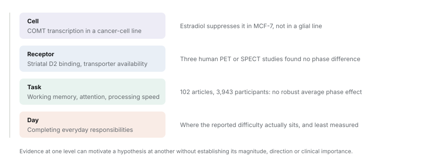
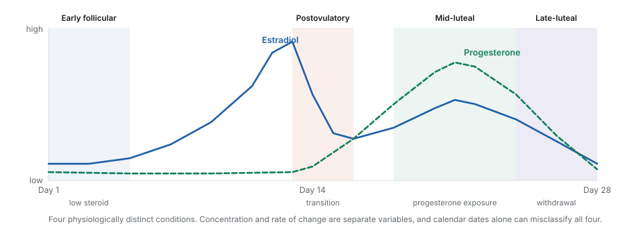
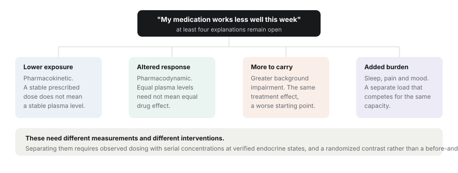

Three explanations are usually bundled together whenever menstrual variation in ADHD is discussed: that ovarian steroid variation alters the neurobiology of the disorder, that it adds a partly independent burden, and that it changes how impairment is perceived and managed. They imply different measurements and different interventions, and the literature does not currently choose between them. What it does support is heterogeneous sensitivity to ovarian hormone context, with the mediating pathways unresolved. This review takes the human ADHD observations alongside the mechanistic and contrary evidence, rather than assigning a neurotransmitter explanation in advance.
Section oneThe question, stated carefully
Reports of menstrual variation in attention, emotional regulation and treatment benefit raise a real question. Recent reviews identify a small and heterogeneous literature spanning menstrual symptoms and other reproductive transitions. Treating those observations as a single demonstration that low estrogen reduces dopamine and worsens ADHD would exceed the available evidence by a considerable margin.
The difficulty is partly one of scale. Cellular regulation of a catecholamine enzyme, striatal receptor binding, performance on a working-memory task, and difficulty completing everyday responsibilities are related but distinct outcomes. Evidence at one level can motivate a hypothesis at another without establishing its magnitude, its direction, or its clinical importance.

That distinction matters most when interpreting menstrual symptoms during stimulant treatment. Greater impairment while on medication does not, by itself, indicate a smaller treatment effect. Pregnancy, postpartum, menopause and hormonal contraception provide context here, but they are not pooled with natural ovulatory cycles.
Section twoHow the literature was assembled
The review was developed from a broad discovery exercise run on 5 September 2026. Eleven title-and-abstract query families in the Europe PMC API covered ADHD and reproductive hormones, menstrual catecholamines, cognition, imaging, neurosteroids, sleep and stress and autonomic function, neurological symptoms, ovarian-hormone catecholamine mechanisms, stimulant pharmacology, hormonal contraception, and PMDD, over first-publication dates from 1800 to the search date. No language filter was applied at retrieval, which is not the same as evaluating every language.
The discovery corpus contained 11,383 deduplicated records. Removing 455 patent and 29 thesis records and adding 14 targeted records produced a candidate library of 10,913. Those are retrieval counts, not screened studies and not independent samples. The source report prioritised 136 references; this article selects a narrower subset for clinical relevance, mechanistic specificity, informative design and counterevidence. There was no prospectively registered protocol, no independent human duplicate screening, no exhaustive citation chasing and no standardised risk-of-bias scoring. Where only abstract-level evidence was available, interpretation was restricted to reported findings and the access limitation was kept visible. Preprints were not used as evidential anchors.
Section threeHormone exposure is a dynamic variable
In an ovulatory cycle, estradiol generally rises before ovulation, falls, and shows a smaller luteal rise; progesterone increases after ovulation and declines before menstruation. That produces four physiologically distinct conditions, and the luteal phase in particular cannot be treated as a uniformly low-estrogen interval.

Concentration and change require separate interpretation, and this is the distinction most often collapsed. A concentration below a participant's own average need not be actively declining. Testing withdrawal sensitivity requires sampling frequent enough to estimate a trajectory; a person-centred concentration model answers a different question. Duration of exposure and prior hormonal state may matter if receptor or circuit adaptation makes rising and falling trajectories behave differently.
Hormonal contraception is a different exposure again. Synthetic formulations and hormone-free intervals cannot be inferred from endogenous-cycle phase labels, and a withdrawal bleed does not establish ovulation. Much of the existing research enrolled participants described as women or females with regular cycles, so its generalisability to gender-diverse menstruating populations, irregular or anovulatory cycles, and different contraceptive formulations remains uncertain. Those are limitations of sampling and physiology; they do not imply that menstrual sensitivity is universal within any sex or gender category.
Section fourCatecholamine mechanisms and their translational limits
Dopamine synthesis, release and receptor availability
Prefrontal catecholamine modulation is often described by an inverted-U: both insufficient and excessive stimulation can impair particular control functions. That framework cautions against assuming every increase in dopamine improves cognition, or that a diagnosis identifies where an individual sits on a neurochemical response curve.
Rodent preparations do demonstrate rapid estradiol effects on stimulated striatal dopamine release, and receptor-manipulation work implicates interactions between estrogen signalling and metabotropic glutamate receptors under particular conditions. These establish biological plausibility and give tractable pathways. They do not establish the size of an intact human menstrual-cycle effect, and ovariectomy with hormone replacement is not equivalent to natural cycling.
Direct human evidence is less consistent with a simple monotonic account. A small repeated-measures PET study detected no phase difference in D2 receptor density. A study of ten women detected no follicular-to-luteal difference in striatal dopamine-transporter availability. A later D2-type PET investigation also reported no significant cycle-related binding change despite endocrine separation; its inconsistent sample counts across sections limit precise sample reporting but do not justify discarding the null.
These studies constrain specific markers rather than all dopamine function. Binding potential depends on available sites, affinity, endogenous competition and analytic assumptions, and transporter availability does not measure phasic release. Conversely, a null in a small sample is not an equivalence demonstration. A cross-sectional PET study comparing 15 hormonal-contraception users, 21 naturally cycling women and 20 male comparators found higher synthesis capacity among users without corresponding differences in D2/D3 binding or methylphenidate-evoked release. The separation among endpoints is the informative part; nonrandomised exposure prevents a causal contraceptive reading.
Catecholamine metabolism and cell context
Estradiol reduced COMT transcription in cellular experiments using human regulatory sequences. Follow-up work found suppression in MCF-7 cells but no COMT-mRNA response in a U138MG glial line. That cell specificity is the whole translational problem in miniature: a promoter effect in a cancer-cell preparation is not a measurement of cortical catecholamine clearance during menstruation.
A study of 24 women linked estradiol, COMT genotype and working-memory performance, which is a genuine human hypothesis about state-dependent modulation. It remains an indirect inference about dopamine, not a validated biomarker and not a basis for genotype-guided ADHD treatment. Replication has to address task dependence, repeated testing, genotype subgroup size and multiple comparisons, and mechanistic work should connect transcription to protein, enzyme activity and clearance in relevant neural preparations before assuming those steps move together.
Norepinephrine and arousal
Norepinephrine is the more obviously relevant transmitter for ADHD, since locus-coeruleus and prefrontal pathways contribute to arousal and control. The direct longitudinal human evidence connecting menstrual hormones, central norepinephrine and ADHD is sparse, and the animal results differ by endpoint rather than converging. Estradiol increased expression of norepinephrine-synthetic enzymes in one protocol, while electrophysiological work found suppressed spontaneous locus-coeruleus firing after estradiol and increased firing after progesterone in estradiol-primed rats. A rhesus study found no steroid-related change in locus-coeruleus norepinephrine-transporter mRNA. These cannot be summarised as a uniform rise in norepinephrine output.
Peripheral measures need similar restraint. A placebo-controlled reboxetine crossover in 16 healthy women found phase- and posture-dependent cardiovascular responses to transporter inhibition, which is not cortical transporter activity and not ADHD efficacy. Plasma catecholamines, cardiovascular responses and integrated CSF metabolites do not selectively quantify synaptic norepinephrine in a particular region. Pupillometry can contribute to a convergent case, but pupil diameter reflects other neural and autonomic processes too.
Section fiveNeurosteroids and the PMDD comparison
Progesterone-derived allopregnanolone positively modulates GABA-A receptors, but the behavioural consequences depend on receptor composition, exposure history and circuit context. Molecular enhancement of inhibition does not predict a uniformly calming clinical response. Neurosteroid sensitivity is a plausible alternative to, or complement of, catecholamine explanations of cycle-linked emotional and attentional difficulty.
PMDD supplies the most informative human manipulation evidence anywhere in this literature. Ovarian suppression followed by hormone add-back elicited symptom recurrence in susceptible participants, with different responses in controls. A later experiment associated recurrence with the transition to add-back, followed by improvement during continued stable exposure. That supports sensitivity to changing exposure rather than a necessary abnormality in absolute circulating concentrations. It does not establish that withdrawal is the only relevant transition, or that ADHD without PMDD shares the mechanism.
A small dutasteride experiment further implicated progesterone conversion pathways, with symptom mitigation in the higher-dose PMDD cohort. Several steroid products are affected and the relevant cohort contained eight participants, so it does not isolate one receptor mechanism or establish an ADHD intervention. Receptor-manipulation experiments in mice support inhibitory adaptation as a biological possibility while preserving the species and disease boundaries. And the larger randomised sepranolone trial did not meet its primary symptom endpoint, which is the useful reminder that pathway plausibility does not guarantee clinical efficacy.
What PMDD suggests for ADHD research
Ascertain cyclic affective symptoms prospectively, and test neurosteroid-sensitive phenotypes separately from persistent ADHD symptoms. What it does not license is assigning all menstrual inattention to either PMDD or dopamine deficiency.
Section sixCognition, imaging and everyday functioning
Objective performance and clinical heterogeneity
A 2025 meta-analysis of 102 articles, 3,943 participants and 730 comparisons found no robust systematic phase differences across objectively scored cognitive domains. That argues against a universal average menstrual cognitive deficit, and it is the single strongest constraint on the popular version of the story. Calendar-phase harmonisation, imputation of some missing information, heterogeneous ascertainment and the populations represented all limit how far it goes: a nonsignificant pooled contrast is not evidence that all individuals and all clinical subgroups are equivalent across phases.
Repeated-cycle work shows why replication matters here. Initial hormone-cognition associations in 88 participants did not recur in the 68 assessed in a second cycle. Against that, a randomised estradiol crossover in a sample enriched for recent suicidal ideation reported perimenstrual effects on working memory and verbal fluency but not inhibition, with 44 participants in the intention-to-treat analysis and 23 per protocol. That was not an ADHD trial and cannot establish general cognitive enhancement.
Objective task performance, effort and daily functioning should stay separate endpoints. Preserved laboratory accuracy can coexist with greater fatigue, reduced persistence, or difficulty organising unstructured activity. Perceived cognitive fog can occur without a measurable working-memory deficit. Both possibilities require measurement rather than an assumption that either subjective or objective evidence is intrinsically decisive.
Imaging and physiological specificity
Dense neuroimaging has identified hormone-associated variation in network organisation and brain structure, including a six-phase 7T study in 27 participants linking hormones to medial temporal measures while accounting for blood flow and water content. That demonstrates the value of repeated sampling. Structural or connectivity changes alone do not establish functional impairment, and they do not identify dopamine as the mediator.
Hemodynamic interpretation deserves particular care. In a three-phase study of 26 participants, higher estradiol and progesterone were associated with greater perfusion and shorter arterial arrival time. Hormone-associated BOLD changes may therefore carry vascular as well as neural contributions. Joint assessment of perfusion, vascular reactivity, electrophysiology and performance can distinguish some of these alternatives; a visually compelling activation map cannot do it alone.
Sleep, stress and pain
Sleep research reports relatively consistent menstrual variation in spindle activity and luteal temperature, with more heterogeneous changes in perceived sleep. A meta-analysis of 121 longitudinal studies involving 2,641 participants found a small follicular-to-luteal basal cortisol difference rather than a uniformly large menstrual stress effect. Cortisol, vagal activity and catecholamine signalling are different physiological outcomes and should not be traded for one another.
Migraine, menstrual pain and catamenial epilepsy demonstrate clinically meaningful hormone-associated vulnerability in specific disorders, but their mechanisms and treatment findings are diagnosis-specific. A randomised progesterone trial in 294 participants with epilepsy was negative on its primary responder comparison, and subgroup signals there cannot be generalised to ADHD. A community study relating ADHD-screen status to heavy bleeding did not establish iron deficiency as a mechanism; ferritin was not measured, and the observational design could not establish mediation. Sleep, pain, mood and longer-term iron status are potential contributors to be characterised, not presumed mediators.
Section sevenDirect evidence concerning ADHD
Prospective trajectories and lived experience
Roberts and colleagues followed 32 regularly cycling young women for 35 days, collecting saliva daily and assaying steroids every other day alongside daily ADHD symptom reports. Low person-relative estradiol in high progesterone or testosterone contexts predicted more next-day symptoms, particularly at higher trait impulsivity, with phase analyses suggesting early postovulatory and early follicular vulnerability. This was a community symptom sample rather than a cohort of 32 diagnosed patients, and the concentration models do not demonstrate effects of the rate of estradiol decline.
Zaritsky and colleagues extended prospective observation to 30 participants treated with amphetamine salts. Across 35 daily surveys, symptoms were greatest during menstruation and lower in the mid-follicular interval, with associated negative mood variation. The available abstract supports symptoms varying during treatment; it does not establish serial drug concentrations or a randomised efficacy comparison. Padilla and colleagues reported exploratory cognitive profiles across two cycle sessions in 30 adolescent girls with ADHD, at a level of access insufficient to appraise hormone confirmation and medication handling.
Qualitative interviews with ten stimulant-treated participants described perceived cycle-linked changes, including mid-luteal difficulty and uncertainty about medication benefit. Those accounts identify outcomes and hypotheses that laboratory studies miss, but selected interviews cannot estimate prevalence or a causal effect. Across these designs the vulnerable interval is not uniform, and the differences may reflect hormone ascertainment, age, treatment, affective comorbidity, outcome selection, or real biological heterogeneity.
| Study and design | Sample and assessment | Finding and interpretive limit |
|---|---|---|
| Roberts et al. 2018 | 32 community participants; 35 days; saliva daily, steroids assayed every other day | Relative hormone levels predicted next-day symptoms in some hormonal and impulsivity contexts. Not a diagnosed ADHD cohort; does not establish hormone-slope effects. |
| Zaritsky et al. 2026 | 30 amphetamine-treated participants; 35 daily surveys | Greater menstrual than mid-follicular symptoms, associated with negative mood. Abstract-level appraisal; no demonstrated exposure or treatment-effect change. |
| Padilla et al. 2026 | 30 adolescent girls with ADHD; two cognitive-testing visits | Exploratory declining and stable profiles. Abstract-only methods; small derived groups need replication. |
| Bürger et al. 2024 | 10 selected stimulant-treated participants; qualitative interviews | Perceived cycle-linked functioning and medication variation, including mid-luteal difficulty. No prevalence or causal estimate. |
| Broughton et al. 2025 | 715 online respondents; overlapping ADHD definitions; retrospective PMDD screening | Provisional PMDD 31.4% in reported clinical ADHD versus 9.8% in the reference group. Selected screening proportions, not population diagnostic prevalence. |
| de Jong et al. 2023 | 9 ADHD clinic patients; individualised premenstrual stimulant increases; 6 to 24 months | All reported improvement and continuation. Uncontrolled and unblinded; generates a trial hypothesis rather than an efficacy or safety estimate. |
ADHD, PMDD and premenstrual exacerbation are three different things
They describe different temporal patterns. Persistent developmental ADHD symptoms can coexist with a cyclic affective syndrome, or worsen alongside pain, sleep disruption and mood symptoms. A high late-luteal symptom score alone does not distinguish these possibilities, and most of the survey literature cannot either.
In the online survey of 715 participants, provisional PMDD was reported in 31.4% of those reporting a clinical ADHD diagnosis against 9.8% of the non-ADHD reference group, with a higher proportion in an overlapping ASRS-defined group. These are recruited-group screening estimates rather than population diagnostic prevalence, and retrospective screening cannot reliably separate prospectively confirmed PMDD from exacerbation of another condition. A small clinical-ADHD subgroup without reported depression or anxiety yielded imprecise estimates, leaving the contribution of affective comorbidity unresolved.
A repeated-phase study of 58 participants with PMDD and 50 controls found attention-related and impulsivity difficulties, including greater late-luteal burden, though these were self-reported rather than objective cognitive results. A larger specialist ADHD clinic sample also reported reproductive mood-symptom burden, with selection and retrospective measurement limiting causal interpretation. The comparison that would actually advance this crosses clinically established ADHD with prospectively assessed PMDD, retaining both comorbid and single-diagnosis groups.
Medication benefit and exposure
Small placebo-controlled laboratory studies in healthy women reported phase-related differences in subjective d-amphetamine effects under some conditions. Those endpoints concern acute drug experience and cannot be equated with sustained symptom control. The nine-patient case series describing improvement after individualised premenstrual stimulant increases, followed for 6 to 24 months, has no blinding and no concurrent control, heterogeneous medications and comorbidities, and evolving assessment procedures, which together preclude a general efficacy or safety estimate.

The evidence reviewed therefore leaves a universal cycle-adjusted dosing algorithm unestablished. That is not an argument that individuals do not experience this, and it is not an argument against characterising it carefully in a given person. It is an argument against generalising a rule from evidence that cannot support one.
Section eightEight competing hypotheses, each with a way to break it
The evidence favours a multilevel model in which hormone context can affect several pathways while daily functioning also depends on treatment and environmental demand. That is a set of testable alternatives, not a claim that every pathway operates in every patient. The total association between hormone trajectory and functioning is a different quantity from a treatment-by-hormone interaction, which is different again from a pathway-specific causal effect. Adjusting for mood may remove a mediated component of interest; ignoring pre-existing affective illness may leave confounding. Covariate selection has to follow the question being asked.
| Hypothesis | Discriminating experiment | Finding that would weaken it |
|---|---|---|
| 1. Hormone transitions | Repeated dense endocrine sampling; compare level and trajectory models in held-out cycles. | Trajectory terms add no meaningful predictive information beyond concentration, with adequate measurement precision. |
| 2. Neurosteroid sensitivity | Cross ADHD with prospectively confirmed PMDD; compare endocrine transition against stable exposure. | No reproducible transition sensitivity in the proposed subgroup despite appropriate exposure and target engagement. |
| 3. Altered drug exposure | Observed dosing and serial concentrations in verified hormone states; prespecified equivalence margins. | Exposure equivalence alongside reproducible functional variation weakens a systemic pharmacokinetic explanation. |
| 4. Sleep, pain or mood pathways | Prospective temporal measurement followed by a targeted intervention and matched control. | Reliable mediator improvement without meaningful functional benefit weakens the proposed causal pathway. |
| 5. State-dependent catecholamines | Hormone-state by task-demand or randomised perturbation interaction; independent baseline and replication. | No reproducible prespecified interaction despite adequate exposure and task sensitivity. |
| 6. Vascular contribution or compensation | Combine perfusion-calibrated imaging, EEG, performance equivalence and effort outcomes. | Convergent neural change after vascular control weakens a vascular-only account; no added effort weakens compensation. |
| 7. Stress-related arousal vulnerability | Randomised stress and neutral conditions across verified phases; lapses and convergent physiology. | Effects limited to peripheral resting measures, without a replicable phase-by-stress behavioural interaction. |
| 8. Cell-specific COMT regulation | Multiple donor neural cultures; changing versus matched constant exposure; COMT knockdown and rescue. | Absent neural COMT effects with receptor engagement, or clearance effects that persist after COMT removal. |
Hypotheses 1 and 2 concern exposure history. Hypothesis 3 is pharmacokinetic. Hypothesis 4 concerns burden that may be added or transmitted. Hypotheses 5 through 8 are more constrained mechanistic questions. All eight arise from the reviewed evidence but none of them is an established finding, and each should be prespecified and tested against its nearest alternative, including informative negative results.
Section nineA staged empirical programme
The first priority is a reproducible clinical phenotype, and almost nothing else can be settled without one. A longitudinal study should distinguish ADHD and PMDD status across four groups, establish cyclic symptoms prospectively over at least two screening cycles, and observe additional cycles for estimation and validation. Hormone-informed sampling should distinguish concentration from change, with denser measurement around transitions. Brief daily functional outcomes, medication timing, mood, sleep, pain and bleeding should accompany the endocrine measures. Repeated laboratory visits can add objective control, response-time variability and effort outcomes, but longer-recall ADHD scales should not simply be relabelled as validated daily measures.
A pharmacokinetic substudy should use observed, formulation-specific dosing and serial concentrations at verified endocrine states, together with adherence and relevant physiological information. Exposure equivalence requires a prespecified margin and adequate precision, not a nonsignificant test. A clinical crossover trial can then compare a clinician-selected adjustment against an indistinguishable control during prospectively established vulnerable windows, maintaining the underlying regimen where appropriate. Randomisation, allocation blinding, adverse-effect assessment and repeated cycles are what separate benefit from expectancy. These are research proposals, not prescribing schedules.
The analysis matters as much as the design. Distinguish participant, cycle and day. Separate within-person hormone deviations from between-person differences. Address serial correlation and informative missingness, which will tend to increase on exactly the most impaired days. Defining vulnerability and testing it in the same data risks optimistic subgroup claims, and more daily observations do not replace independent participants for estimating an interaction. Sample size should come from simulation of the actual design, incorporating measurement error, missingness and a clinically meaningful primary estimand.
Section tenLimitations, and what this leaves standing
This review prioritised explanatory coherence and counterevidence over exhaustive eligibility-based coverage. The broad retrieval library contains adjacent literature and does not provide a denominator for the prevalence of positive findings. Selection was purposive, access depth varied, and formal risk-of-bias assessment and independent duplicate screening were not completed. Quantitative effects were not pooled across heterogeneous populations and outcomes. All of that limits any claim of completeness or graded certainty.
The underlying clinical evidence carries its own constraints: small samples, selected recruitment, retrospective symptom attribution, inconsistent hormone confirmation and limited control of medication exposure. Several recent ADHD reports were accessible only at abstract level. Repeated measures improve temporal resolution without establishing population representativeness. General-cognition findings do not settle clinical subgroups, and disease-specific endocrine manipulation does not transfer automatically from PMDD or epilepsy to ADHD. Animal and cellular experiments isolate mechanisms at the cost of physiological and clinical comparability.
What the evidence does and does not establish
Supported: individual cycle-associated impairment merits careful characterisation, and sensitivity appears heterogeneous rather than universal. PMDD manipulation experiments establish clinically relevant steroid sensitivity in a susceptible population.
Not established: a menstrual catecholamine deficiency syndrome, a diagnostic hormone threshold, or a generally effective cycle-based medication strategy. No direct ADHD study in the selected evidence set established a cycle-dependent central dopamine or norepinephrine mechanism.
Menstrual-cycle variation offers a plausible context for changes in ADHD-related functioning, but the direct evidence linking those changes to central catecholamines remains incomplete. Preclinical findings support several hormone-sensitive mechanisms, while human dopamine imaging and general cognitive research constrain a universal impairment model. PMDD experiments motivate analogous mechanisms in ADHD rather than confirming them.
Progress here depends on three distinctions that are cheap to state and expensive to measure: hormone levels from hormone transitions, symptoms under treatment from treatment effects, and direct neural measurement from physiological proxies. Prospective phenotyping followed by targeted and randomised experiments is what converts those distinctions into evidence a clinician could act on.
Sources
Reviews and cycle methodology. Osianlis E, Thomas EHX, Jenkins LM, Gurvich C, J Atten Disord 29:706, 2025; Kennedy G, Baran-Goldwax M, Lippé S, Womens Health (Lond) 22, 2026; Schmalenberger KM, Tauseef HA, Barone JC, et al., Psychoneuroendocrinology 123:104895, 2021.
Dopamine, COMT and norepinephrine. Cools R, D'Esposito M, Biol Psychiatry 69:e113, 2011; Becker JB, Synapse 5:157, 1990 and Neurosci Lett 118:169, 1990; Song Z, Yang H, Peckham EM, Becker JB, eNeuro 6, 2019; Nordström AL, Olsson H, Halldin C, Psychiatry Res 83:1, 1998; Best SE, Sarrel PM, Malison RT, et al., Psychopharmacology 183:181, 2005; Petersen N, Rapkin AJ, Okita K, et al., Mol Psychiatry 26:2038, 2021; Taylor CM, Furman DJ, Berry AS, et al., Cereb Cortex 33:8485, 2023; Xie T, Ho SL, Ramsden D, Mol Pharmacol 56:31, 1999; Jiang H, Xie T, Ramsden DB, Ho SL, Neuropharmacology 45:1011, 2003; Jacobs E, D'Esposito M, J Neurosci 31:5286, 2011; Serova L, Rivkin M, Nakashima A, Sabban EL, Neuroendocrinology 75:193, 2002; Szawka RE, Rodovalho GV, Monteiro PM, et al., J Neuroendocrinol 21:629, 2009; Schutzer WE, Bethea CL, Psychoneuroendocrinology 22:325, 1997; Moldovanova I, Schroeder C, Jacob G, et al., Hypertension 51:1203, 2008; Parry BL, et al., Neuropsychopharmacology 5:127, 1991; Eriksson E, et al., Neuropsychopharmacology 11:201, 1994; Joshi S, Li Y, Kalwani RM, Gold JI, Neuron 89, 2016.
Neurosteroids and PMDD. Hantsoo L, Epperson CN, Neurobiol Stress 12:100213, 2020; Schmidt PJ, Nieman LK, Danaceau MA, et al., N Engl J Med 338:209, 1998; Schmidt PJ, Martinez PE, Nieman LK, et al., Am J Psychiatry 174:980, 2017; Martinez PE, Rubinow DR, Nieman LK, et al., Neuropsychopharmacology 41:1093, 2016; Maguire JL, Stell BM, Rafizadeh M, Mody I, Nat Neurosci 8:797, 2005; Maguire J, Mody I, J Neurosci 27:2155, 2007; Bäckström T, Ekberg K, Hirschberg AL, et al., Psychoneuroendocrinology 133:105426, 2021; Sacher J, Zsido RG, Barth C, et al., Biol Psychiatry 93:1081, 2023.
Cognition, imaging, sleep, stress and pain. Jang D, Zhang J, Elfenbein HA, PLoS One 20:e0318576, 2025; Leeners B, Kruger THC, Geraedts K, et al., Front Behav Neurosci 11:120, 2017; Schmalenberger KM, Mulligan EM, Barone JC, et al., Psychiatry Res 342:116188, 2024; Pritschet L, Santander T, Taylor CM, et al., Neuroimage 220:117091, 2020; Zsido RG, et al., Nature Mental Health 1:761, 2023; Wright ME, Driver ID, Crofts C, et al., J Cereb Blood Flow Metab 46:1889, 2026; Baker FC, Driver HS, Sleep Med 8:613, 2007; Alzueta E, Baker FC, Sleep Med Clin 18:399, 2023; Klusmann H, Schulze L, Engel S, et al., Front Neuroendocrinol 66:100998, 2022; MacGregor EA, Frith A, Ellis J, et al., Neurology 67:2154, 2006; Iacovides S, Avidon I, Baker FC, Eur J Pain 19:1389, 2015; Herzog AG, Fowler KM, Smithson SD, et al., Neurology 78:1959, 2012; MacLean B, Buissink P, Louw V, et al., Nutrients 17:785, 2025.
ADHD-specific evidence. Roberts B, Eisenlohr-Moul T, Martel MM, Psychoneuroendocrinology 88:105, 2018; Zaritsky R, Reed SC, Evans SM, J Atten Disord 30:329, 2026; Padilla M, Varela P, Hernandez H, et al., Eur Child Adolesc Psychiatry 35:1997, 2026; Bürger I, Erlandsson K, Borneskog C, Sex Reprod Healthc 40:100975, 2024; Broughton T, Lambert E, Wertz J, Agnew-Blais J, Br J Psychiatry 226:410, 2025; de Jong M, Wynchank DSMR, van Andel E, et al., Front Psychiatry 14:1306194, 2023; Lin PC, Long CY, Ko CH, Yen JY, J Womens Health 33:1267, 2024; Dorani F, Bijlenga D, Beekman ATF, et al., J Psychiatr Res 133:10, 2021; White TL, Justice AJ, de Wit H, Pharmacol Biochem Behav 73:729, 2002; Justice AJ, de Wit H, Psychopharmacology 145:67, 1999 and Pharmacol Biochem Behav 66:509, 2000.
The full reference list, with DOIs, and both supplementary materials (the search strategy with retrieval accounting, and the proposed experimental designs) are in the PDF editions. The reference list and its numbering are identical in the English and Japanese editions; the Japanese edition is a translation of the same review rather than an independent study.
Disclosure of AI assistance. AI assistance was used for literature discovery, source summarisation, evidence organisation, drafting and revision, hypothesis development, bilingual translation, and preparation of tables and supplementary materials. This does not constitute independent human screening or peer review. No original human-participant data were collected. This page is a research review, not clinical advice.